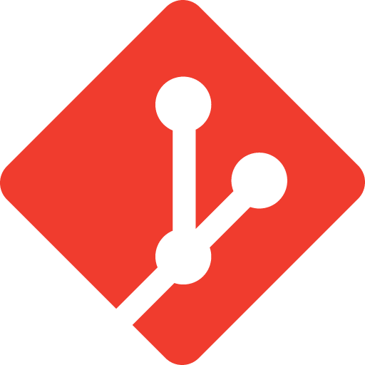

Portfolio
About Me
Aspiring DevOps Engineer
Name : Mr. Varot Vilay
Major : ComSci
Student ID : 6909650696
"Hello, I'm B, a first year computer science student. I'm interested and passionate
about
DevOps & Cloud Engineering. I have a background in programming with Python and C++.
Currently, I'm
committed to learning more HTML, CSS, Docker and Linux tools. And I'm applying Web
Fundamentals
skills
to grow into a DevOps Engineer in the future."
Categorized Skills
Programming & Automation:
 C++
C++ Python
Python
Web Fundamentals
 HTML5
HTML5 CSS
CSS
Tools & OS(Currently studying)

git- github
Future DevOps Roadmap
 Linux
terminal
Linux
terminal- Docker
- CI/CD
- Cloud
DevOps Learning Roadmap
Foundations : Laying the foundation for logic in C++ and Python.
Current Focus (First Year) :Studying CS Fundamentals and Web Fundamentals HTML/CSS in CS100
Next Steps - DevOps Goals : Study Docker containers, CI/CD automation, cloud systems, And practice using the command line on Linux.
A1_Assignment
What I built
This is a simple, single-page personal learning portfolio built using only HTML and CSS for the CS100 course. It features sections for About Me, categorized skills, a roadmap, A1 assignment and my contact information.
The client component is already present as the web browser we use to open, read, and render HTML/CSS files.
The server component is not involved, as the files are retrieved directly from the local disk rather than being requested via the HTTP protocol from a web server.
How I built it
Start by structuring the website using HTML, dividing the content into Header, Main, Sections, and Footer elements.
Next, use CSS to style and format the website into an organized and user-friendly layout, using GitHub Copilot to assist with styling.
Use VS Code as the primary development tool while expanding my knowledge of HTML and CSS through resources such as W3Schools and DataCamp, and by referencing portfolio designs from v0 by Vercel.
Reflection
- Issue/Challenge: The issue lies with CSS; the sheer number of available tools makes it difficult for me to decide on a web design approach.I resolved the issues by using AI to fix specific areas or by asking for methods to achieve the design I wanted.
- Learning Outcome: completing A1, I understood that HTML is responsible for defining the structure and content of a website, while CSS is responsible for defining the style and display. I also understood the concepts of Client and Server.
- Future Improvements: If I were to continue developing this project, I would want to incorporate JavaScript to enhance user interactivity, potentially switch from standard CSS to Tailwind, and improve responsiveness.
Portfolio Item
Title : K-Engineering world Tour and Worhshop
Type : Certificate , Lap
Data : 4 สิงหาคม 2567
Role : Workshop Participant